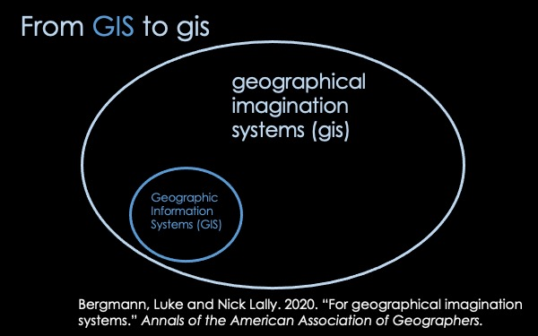

In this talk, I am going to introduce a tool I've been working on that I call "shaping," but first I will talk a bit about what I mean by "geographical imagination systems"
Luke Bergmann and I are motivated by the question:
"What if GIS were built upon the epistemological and ontological commitments that tend to motivate contemporary human geography in particular—or even on the interpretative social sciences and theoretical arts and humanities more generally?"
For example, spatial theory in human geography describes space as relational, processual, paradoxical, topological, etc., so why should we settle for the narrow, mathematical description of space offered by GIS? What are the expressive possibilities for cartography when we treat space as an always unfinished matter of concern?

Our conceptualization does not attempt to supplant GIS, but rather, it suggests that GIS might just be one subset of operations under the broader umbrella of gis.
We are inspired by Joanna Drucker's work on speculative computing, which pushes against many existing computational paradigms and assumptions to consider how computing could posit knowledge as experiental—partial, situated and subjective.
Our first gis was "enfolding" http://foldingspace.github.io/enfolding/, which allows users to redefine distances within one or across multiple maps.
For example, air routes pinch space together as time distance differs from Euclidean distance
And the economically- or technologically- mediated wormhole of trade connections or drone strikes bring to faraway places in close relation
I built the second gis, shaping, with the desire to have more direct manipulations of space, allowign the user to sculpt, tear, and algorithmically expand parts of a map
And I have started to sketch out where gis might exist in mapmaking workflows, as web-based tools that can be used in isolation or connected to existing GISes and design programs.
This part of the workflow is my focus for today.

In shaping, you can first determine a grid and move your control points
These control points can be moved around to sculpt or shape the space of the map
I haven't implemented it yet, but I will be adding algorithmic means for expanding areas. There are a number of methods proposed by scholars, above are two.
Users can also use control points to tear parts of the map, producing cuts.
They can then output the modifications as a geojson of linestring pairs or as ground control points (GCP).
In QGIS, the geojson file can be used with the Vector Bender plugin to modify vector layers and the GCPs can be used with the georeferencer plugin to modify raster layers.
A close-up of an expansion of Lexington
Please contact me if you know how to make a cut/tear in GIS! I don't know how to make this translation into GIS. One possibility is hyperproj—a method for calculating projections suggested by Bergmann and O'Sullivan
A map I made with shaping
What are the expressive possibilities for mental mapping offered by shaping? For example, Jack Gieseking in his new book uses mental mapping extensively as a method—could shaping be a means to produce or interpret mental maps?
Here's a map showing the introduction of I-980 in Oakland tearing neighborhoods apart, reifying existing patterns of segregation and mirroring the borders of the HOLC redlining maps—one example of the racist history of urban planning in the United States.
I wonder how the tear could build on existing work on borders. For example, Meghan Kelly's work on feminist approaches to mapping borders.
Perhaps the tear could signal that certain types of borders break existing understandings of adjacency and ideas of "nearness"
These are just some ideas of what the functions of shaping might contribute to cartography, but I am most excited to hear what you might do with a tool like this. What geographical imaginations do you want to bring to fruition? Thanks!